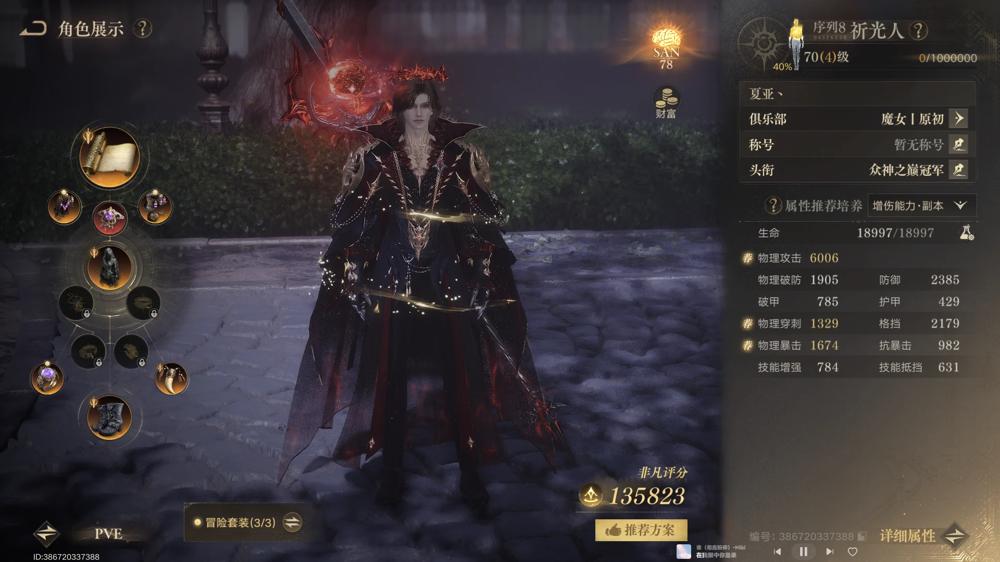
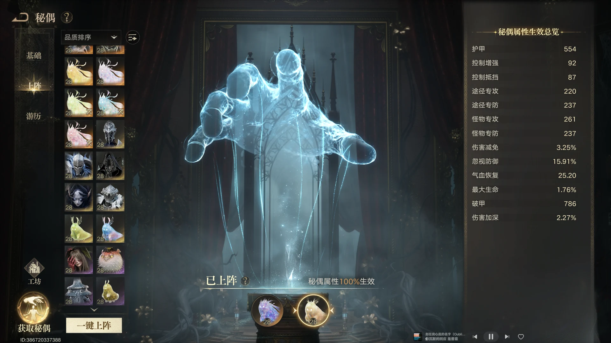
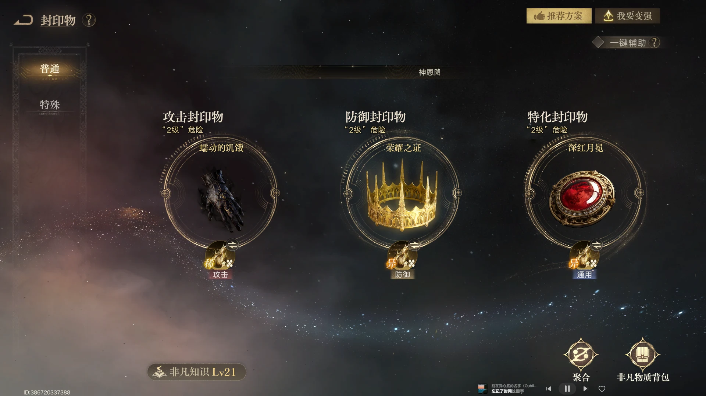
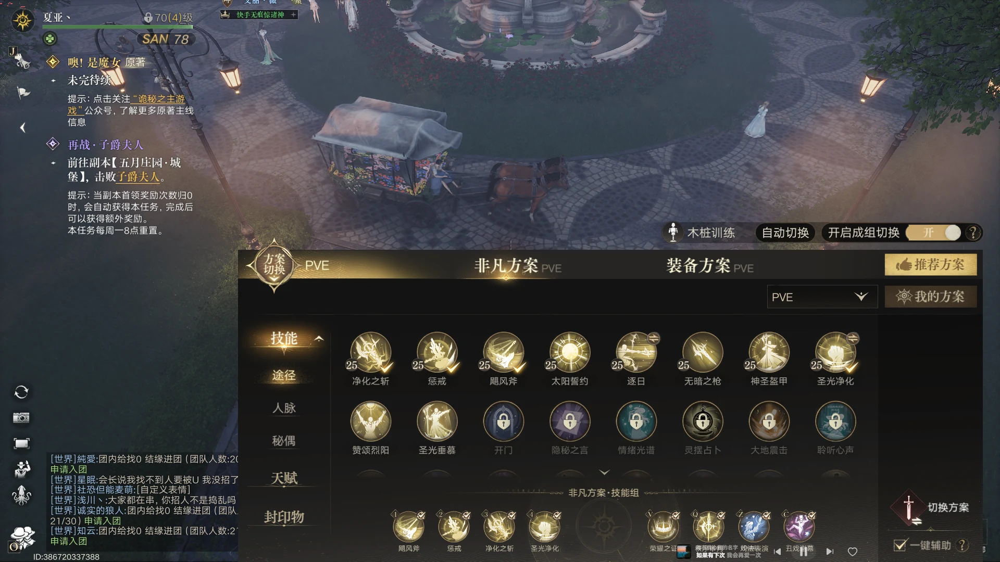

PVE 装备与属性
破防、穿刺、暴击先过基础线，达标后以怪物专攻为主要方向。

先满足三项基础门槛
推荐先把破防提高到 1300、穿刺提高到 1300，暴击达到 1000 左右。这里是当前 PVE 配装的参考线，具体仍要结合自身面板和副本需求调整。
达标后优先怪物专攻
当前独珍装备选择较多，满足基础属性后，装备取舍以补怪物专攻为主。推荐三件套部位选择百炼衣服、百炼戒指、百炼头；其余位置选择独珍鞋子、独珍护符、独珍武器、独珍披风和红胸针。
最后补暴击与攻击
基础属性和怪物专攻达标后，优先继续补暴击和攻击，让面板收益更稳定。
PVE 秘偶选择
优先星之虫守秘和星之虫咏；守秘练度不足时，小丑是更通用的替代方案。

常规推荐星之虫守秘和星之虫咏
PVE 秘偶优先考虑星之虫守秘和星之虫咏，作为当前副本输出与属性补足的常规组合。
守秘练度不足时考虑小丑
当前小丑满阶的伤害表现可以超过守秘。如果守秘练度不高，或者没有高阶的星之虫咏，可以考虑抽取小丑；小丑在 PVP 和 PVE 中都通用，无论上阵还是使用都能服务多种场景。
PVE 封印物选择
固定思路为蠕动、皇冠、日冕，下本时可按需求把日冕换成神灯。

常规固定选择
封印物常规选择以蠕动、皇冠、日冕为固定思路；进入副本时，可以考虑把日冕替换成神灯。
二级封印物升级方向
只玩 PVE 可以优先把蠕动升到 2 级；只玩 PVP 可以升面具；希望兼顾多个场景时，可以选择四叶草或日冕。
PVE 技能组
多数账号优先锤子，只有暴击很高时才考虑枪；输出稳定性优先。

默认优先锤子
当前大部分账号都推荐带锤子，锤子的出伤更稳定；只有暴击很高的账号，才更适合考虑玩枪。
避免誓约加锤子
技能组选择时，注意不要使用誓约加锤子这种偏打桩的组合。优先选择能稳定完成输出循环的方案。